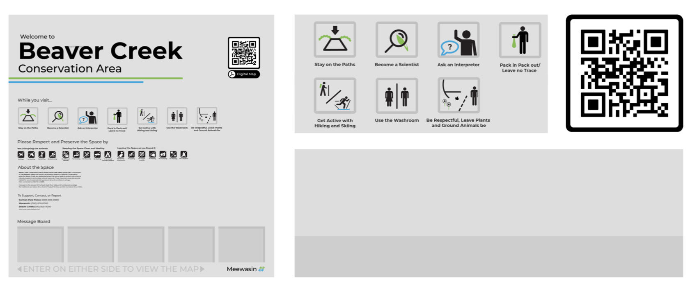
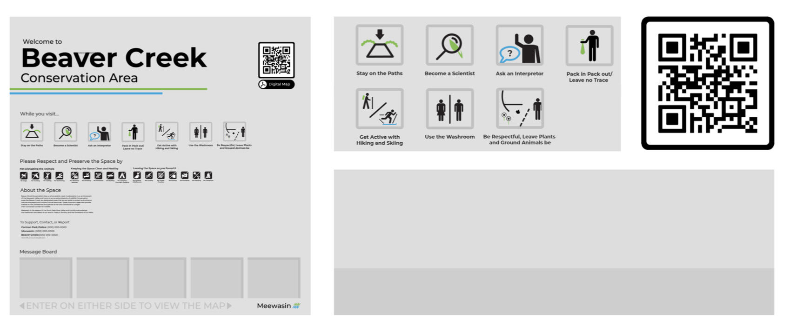
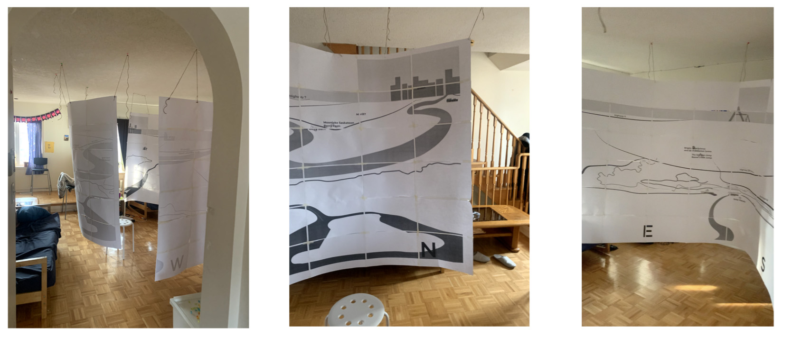
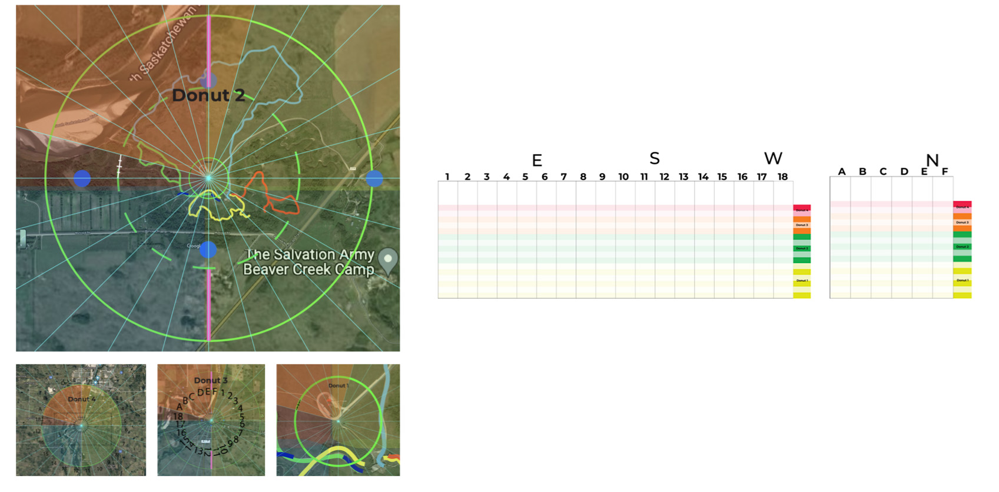
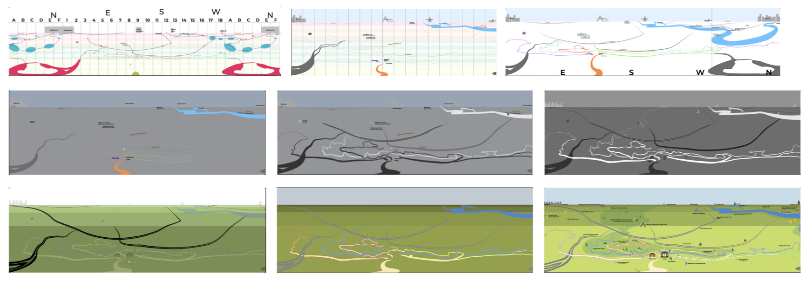
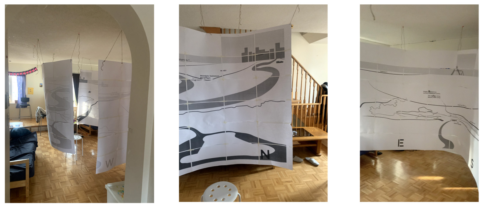
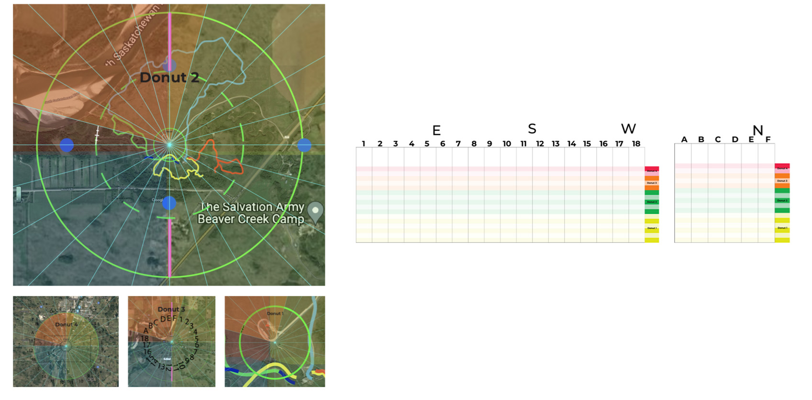
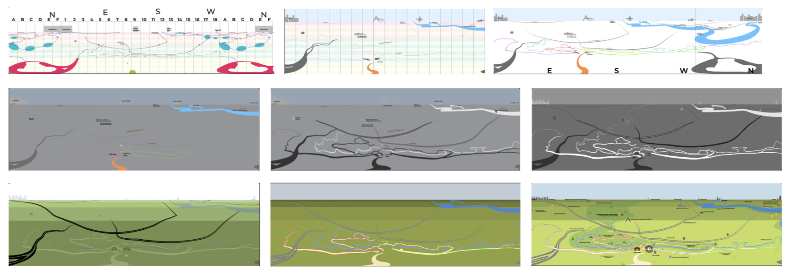

360 Wayfinding Nature Map
Wayfinding and Placemaking
May 2022
 

 





This project was built for the public with the user in mind. Its aim was to create a more accessible and user-friendly experience for those orienting themselves in natural spaces. After being inspired by a critical mapping course, I began thinking about how we could improve maps and think critically about this piece of closed infrastructure. The first challenge was to find a visualization method that may offer more to users than an aerial view of parks. I found when conducting my literature review that there were very few studies on mapping nature spaces. This was notable because, unlike urban areas that have concrete streets and building lines, nature spaces are more complex and difficult to navigate because they often lack distinct boundaries. My intensive research taught me that no map is truly quantitative and for that reason, it is best to use wayfinding maps and graphics that best suit the user depending on the situation to create a more effective tool. After researching sustainable materials, interviewing professionals, and determining accessibility features and requirements, and discovering the importance of landmarks in outdoor navigation I got to work!
Some challenges and setbacks in this project included finding an ethically sustainable material for this hypothetical sign, using a pleasing colour scheme with high contrast, and spending many hours creating a system to plot this extended perception-based map. This piece is relevant to the public as it has multiple purposes. The first would be that this piece helps the user understand the direction that different landmarks are in. Upon construction, this piece would also be textural so if people had low vision/blindness or were in low vision contexts such as trying to read it at night in a remote area, they would be able to feel the map to read it. Lastly when reading about people who are blind, many of them statistically also need a place to rest when outdoors. This inspired me to add a bench around the outside of the structure to act as a resting place for all users.
This piece re-thinks what a map can look like. It paints a picture for the user as to the context of the area they are in and uses its 360 structure to tell users what direction landmarks are instead of looking at it from above. I think this piece could help inspire others to design maps that are more sustainable and accessible and as Edward Tufte would say, "escape the flatland".